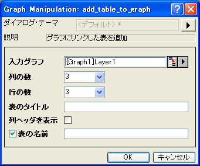

内容 |
リンクしたテーブルをグラフに追加します。
1. add_table_to_graph cols:=3 row:=3;
2. add_table_to_graph cols:=5 rows:=4 title:=mytable;
3. add_table_to_graph igl:=[graph2]layer1 cols:=5 rows:=4 title:=mytable col:=1;
| 表示 名 |
変数 名 |
I/O と データ型 |
デフォルト 値 |
説明 |
|---|---|---|---|---|
| 入力グラフ | igl |
入力 GraphLayer |
<active> |
追加されるグラフレイヤ |
| 列の数 | cols |
入力 int |
5 |
表の列の数を指定します。 |
| 行の数 | rows |
入力 int |
8 |
表の行の数を指定します。 |
| 表のタイトル | title |
入力 string |
|
表のタイトルを指定します。 |
| 列ヘッダを表示 | col |
入力 int |
0 |
列ヘッダを表示するかどうかを指定します。 |
| 表の名前 | tabname |
出力 string |
|
作成した表の名前を出力 |
関数は、グラフにリンクしたテーブルを追加します。これは、グラフに追加の情報を表示するものです。
テーブルは編集可能です。編集するには、テーブルをダブルクリックします。そして、それを開いて、そこで変更することができます。編集が済んだら、表の更新 ボタンをクリックして、テーブルを閉じ、グラフに変更を行います。
この例では、アクティブグラフに3x3のテーブルを追加します。
1. グラフがアクティブなとき、Originメニューからグラフ操作：新規テーブルを選択します。これは、Xファンクションadd_table_to_graph のダイアログを開きます。
2. Xファンクションのダイアログで、下の図のように設定を変更し、OK をクリックしてダイアログを閉じます。

新しいテーブルがグラフに追加されます。
他のサンプルについては、XFスクリプトダイアログ(F11を押す)をご覧下さい。